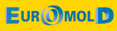
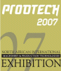

|
05 - 08 Aralýk 2007 > EuroMold, World Fair for Moldmaking and Tooling, Design and Application Development
Ülke / Þehir: Almanya /
Frankfurt
Yer: Messegelände Exhibition Center
The whole process chain "From Design to Prototyping to Series Production" is represented at EuroMold. A unique fair concept that closes the gap between industrial designers, product developers, producers, suppliers, and end-users. EuroMold shows methods for a quicker, more economical, and more efficient development and production of new products - a factor of increasing importance within the demands of the modern economy.
Since its beginnings in 1994, EuroMold has grown in exhibitors, in trade visitors, in internationality, in variety, in exhibition space, year after year. At EuroMold 2007, more than 65,000 trade visitors will be welcomed by around 1,700 exhibitors from Europe and abroad. Utilise EuroMold 2007 to access new international markets.
Daha
fazla bilgi için: www.euromold.com
03 - 04 Aralýk 2007 > Euro-uRapid 2007, International User's Conference on Rapid Prototyping & Rapid Tooling & Rapid Manufacturing
Ülke / Þehir: Almanya /
Frankfurt
Yer: Konferenzort, Deutsche Nationalbibliothek
... international renowned companies, scientists and Rapid experts meet potential users
The Euro-uRapid is the venue for the international Rapid world: innovative investigators and developers, well-known suppliers and service providers present and discuss with potential users and interested parties the global progress of Rapid product development.
... strategic and demand oriented, focused on competition success
The fulfillment of strategic demands leads to the greatest possible Rapid use and lasting competition advantages. Therefore, most important are strategic questions: which Rapid concepts, Rapid technologies and Rapid processes lead when to product and competition success?
Daha
fazla bilgi için: www.urapid.eu
27 - 30 Kasým 2007 > PROD-TECH 2007,
Uluslararasý Kuzey Afrika Makine ve Üretim Teknolojileri Fuarý
Ülke / Þehir: Cezayir / Safex
Tüm makine, makine aksam ve parçalarý Deðirmen makineleri, gýda iþleme, ambalaj, tarým makineleri, iþ makineleri, metal iþleme makineleri, kesim büküm, kesme makineleri, kaynak makineleri, presler, metal enjeksiyon makineleri, kablo iþleme makineleri, demir levha iþleme makineleri, atölye malzemeleri, matkaplar, vidalar, mengeneler, testereler, bileyleme ve cilalama makineleri, makine yaðlarý ve soðutucularý, üretim robotlarý, tekstil makineleri, demir levha kesme makineleri, profil kesme makineleri, hidrolik makaslar, paketleme makineleri, dolgu makineleri, kapak makineleri, mühürleme makineleri, vakum makineleri, cam paketleme makineleri, plastik levhalar, kalýp dökme makineleri, plastik makineleri, ayakkabý ve deri iþleme makineleri, yedek parçalar ve aksesuarlar, tarým makineleri, traktörler, yapý makineleri, tohum ve sulama makineleri, aðaç iþleme makineleri, takým tezgahlarý.
Organizatör: LDN
Daha
fazla bilgi için: www.prodtech4africa.com
13 - 16 Kasým 2007 > Midest 2007 - The world's leading industrial subcontracting show
Ülke / Þehir: Fransa / Paris
Yer: PARIS-NORD VILLEPINTE
MIDEST is the largest international gathering of subcontracting technical expertise and services for the processing of metals, plastics, electronics and electricity. MIDEST offers industry professionals solutions that meet their requirements from the subcontracting of capacity to the complete industrialization of products involving the latest technologies. Over four days subcontractors and customers can review developments in their markets and forge effective regional and national relationships.
- MIDEST: The world's leading industrial subcontracting show
- 70 000 square metres of exhibition space
- 47,915 visitors from all around the world
- 1,736 exhibitors, including the 652 drawn from 38 countries outside France
- Customers from all industrial markets, 20% are buyers.
MIDEST is organized by Reed Exhibitions, the leading trade show organizer in France (60 exhibitions) and the world (470 events in 49 sectors of business in 29 countries).
MIDEST, comprehensive coverage:
- Metal Processing
- Screw Cutting ,Machining, Special Machines
- Finishing, Surface Treatments, Thermal Treatments
- Industrial Fasteners
- Forging, Foundry, Fabrication
- Metal Cutting
- Semi-Finished Products
- Plastic/ Rubber /Composite Material Processing
- Electronics/Electricity
- Microtechniques
- Industry Services
- Engineering / Design / Research / Quality/ Services
- Industrial Maintenance
Daha
fazla bilgi için: www.midest.com
06 - 10 Kasým 2007 > Metalworking and CNC Machine Tool Show 2007
Ülke / Þehir: Çin / Shanghai
Yer: Shanghai New International Expo Centre
Metal working China 2006 saw a total of 500 exhibitors displaying their latest products and solutions on 35,000 sqm indoor space. The show has attracted overall 39,000 professional visitors to attend the trade shows, they are from various areas like automobile industry, defense and ministry industry, shipbuilding industry, aviation industry, Die &Mould industry, electric power and electronic industry, general machinery and so on, the great appeal is embodied in the presence of many pavilions organized by large user companies and associations.
In 2007, Hannover-Messe International GmbH, Hannover Fairs China Co., Ltd. Shanghai, Shanghai World Expo (Group) Co., Ltd. will co-organize Metal Working and CNC Machine Tool Show and form a more powerful alliance...
Daha
fazla bilgi için: www.metalworkingchina.com
24 - 31 Ekim 2007 > K 2007 17th international Trade Fair Plastics and Rubber
Ülke / Þehir: Almanya / Dusseldorf
Yer: Düsseldorf Fairgrounds Halls 1 - 17
Main product groups:
- Raw materials, auxiliaries
- Semi-finished products, technical parts and reinforced plastics
- Machinery and equipment for the plastics and rubber industries
- Services for the plastics and rubber industrie
Daha
fazla bilgi için: www.k-online.de
26
- 27 Eylül 2007 > TCT 2007 Conference and Exhibition; The
UK's No.1 Event for Rapid Product Development & Manufacturing:
Ülke / Þehir: Ýngiltere / Coventry
Yer: Ricoh Arena
The TCT 2007 Exhibition, will feature more than 100 suppliers from the world of Rapid Product Development (RPD), including all the leading Rapid Prototyping and Rapid Manufacturing machine manufacturers under one roof for the only time in the UK this year. Also exhibiting will be leading players from the Scanning and Digitising, CAD/CAM Software, Rapid Tooling and Materials sectors, who will showcase their latest offerings presenting the perfect opportunity to appraise all of the latest technologies on the market. Service providers from all the sectors will also be on hand to demonstrate the most effective and up-to-date ways of utilising the technologies available in 2007.
Daha
fazla bilgi için: www.tctshow.com
17 - 22 Eylül 2007 > EMO Hannover - The world of metalworking (Metal Ýþçiliði ve Kaynak Teknolojileri Fuarý)
Ülke / Þehir: Almanya / Hannover
The entire range of products and services for the metalworking technology is on display with special emphases on cutting, splitting, milling and metal forming machine tools, manufacturing systems, precision tools, automation components, computer technology, industrial electronics and accessories.
Baþlýca Ürün Gruplarý:
Sac Metal Ýþleme, Levha Metal Ýþçiliði, CIM, CAD/CAM, Montaj Mühendisliði, Fabrika Otomasyonu, Endüstriyel Robotik Sistemler, Algýlama Sistemleri Sensörler, Ölçme Sistemleri, Test Etme Teknolojileri, Kaynak Teknolojileri, Kesme Araçlarý, Metal Ýþçiliði Araçlarý...
Daha
fazla bilgi için: www.emo-hannover.de
14 Eylül 2007 > ISTMA - European Tooling Forum
Ülke / Þehir: Portekiz / Lizbon
Yer: Culturgest Auditorium
The European Tooling Industry, although still holding its own in sales, is rapidly losing ground in the manufacturing sector to low production cost countries. Concerned about its competitiveness and being aware of the strategic importance and role that this Industry plays for the sustainability and growth of the European economy, the ISTMA (International Special Tooling & Machining Association) Europe plans to organise with the support of MANUFUTURE Platform the European Tooling Forum, gathering for discussion Tooling companies, policy makers, R&D and Innovative organizations, media and European Decision Makers, to push and reinforce an Industrial policy to support a more competitive Industry in Europe.
Daha
fazla bilgi için: www.istma-europe.com/istma-europe/European_Tooling_Forum
E-mail: cefamol@mail.telepac.pt
Tel: +35 (124) 454 56 00
11
- 12 Temmuz 2007 > Rapid Manufacturing - 2nd International
Conference:
Ülke / Þehir: Ýngiltere / Nottingham
Yer: Loughborough University
The
Second International conference on Rapid Manufacturing will
include a mixture of adacemic and industrial presentations
focused on both RM research and applications.
Conference
focus:
Rapid Manufacturing (RM) is one of the most exciting emergent technologies available to global industry today. RM uses 3D Computer Aided Design (CAD) data to directly 'print' or 'grow' parts in a variety of polymeric, metallic, ceramic and organic materials. RM allows companies to manufacture ever more complex and optimized components at very low unit volumes. It is suggested that RM could enable a step-change for manufacturers that will ultimately result in manufacturing being maintained in high wage economies. The advantages that RM brings are already being commercially exploited by organisations such as Siemens, BAe Systems, Boeing, Renishaw and many others, to gain commercial advantage today. Much academic research is also being undertaken into RM, and it is the aim of this conference to impart to industry and academia the state-of-the-art in Rapid Manufacturing, so that commercial advantage can be exploited and new avenues can be explored.
The 2-day programme includes 20 dedicated RM presentations from organisations includes companies such as Boeing, Siemens and BAe Systems and from Universities including Maastricht, Texas, Loughborough and Clemson. An exhibition of RM machine and materials vendors will also take place during the conference.
Daha
fazla bilgi için: www.rm-conference.com
12 - 16 Haziran 2007 > Newcast,
Uluslararasý Döküm Fuarý
Ülke / Þehir: Almanya / Düsseldorf
4 etkinlik bir arada düzenleniyor:
- GIFA >
11th International Foundry Trade Fair with WFO Technical Forum
- METEC >
7th International Metallurgical Technology Trade Fair
with InSteelCon & EMC 2007
- THERMPROCESS >
9th International Trade Fair and Symposium for Thermo Process Technology
- NEWCAST >
2nd International Castings Trade Fair
with Newcast Forum
Organizatör: Messe Düsseldorf
Daha
fazla bilgi için: www5.newcast-online.de
13
- 15 Haziran 2007 > 2. Rosmould Moskova Uluslararasý Kalýp
Fuarý 2007:
Ülke / Þehir: Rusya Federasyonu / Moskova
Yer: Crocus Expo Exhibition Fuar Merkezi / Salon No:
1
Rusya
Kalýp Sektörü hakkýnda;
- Sektör,
sanayideki geliþime paralel olarak hýzla büyümektedir,
- Sektörde
yerel üretim yok denecek kadar azdýr,
- Sektör
için gerekli makine ve ekipman ihtiyacýnýn %95-97'si ithalat
yoluyla karþýlanmaktadýr,
- Ýthalatta
yeni ekipmanlarýn payý %25 civarýndadýr,
- Teknolojik
geliþmelere ayak uydurabilmek için mevcut makine ve ekipmanlarýn
yenilenme ihtiyacý, sektörün talebini daha da arttýrmaktadýr.
Daha
fazla bilgi için: www.crocusexpo.ru
22 - 23 Mayýs 2007 > Rapid.Tech 2007,
Trade fair and user's conference for rapid technology
Ülke / Þehir: Almanya / Erfurt
The 4th Rapid.Tech will focus on Rapid Manufacturing - the direct production of end products using generative manufacturing processes, illustrating that the Rapid.Tech reflects the pulse of the times as it addresses and distributes forward-looking trends at an early stage of their development.
"The practical and user-oriented Rapid.Tech offers an ideal platform for users, service-providers, manufacturers and scientists, and it is still capable of further development"
The Trade Exhibition grants special insights into technological processes and applications in the form of presentations of machinery, plants, accessories and services. 62 companies presented their products and services to more than 600 visitors to the Trade Exhibition.
Organizatör: Messe Erfurt AG
Daha
fazla bilgi için: www.rapidtech.de
16 - 20 Nisan 2007 > Hannover Fair,
Uluslararasý Sanayi Fuarý
Ülke / Þehir: Almanya / Hannover
13 alt fuarý bir arada bulunduran büyük bir etkinlik:
- INTERKAMA+ >
Leading Trade Fair for Process Automation
- Factory Automation > Leading Trade Fair for Production Automation
- Industrial Building Automation > International Trade Fair for Integrated Industrial and Building Automation Systems
- MDA - Motion, Drive & Automation > Leading Trade Fair for Power Transmission and Control
- Digital Factory > Leading Trade Fair for Integrated Processes and IT Solutions
- Subcontracting > Leading Trade Fair for Subcontracting Services, Materials, Components and Systems for Mechanical Engineering, the Automotive Industry and Plant Engineering
- Energy > Leading Trade Fair for Renewable and Conventional Power Generation, Transmission, Distribution and Utility Management
- Pipeline Technology > Leading Trade Fair for Pipeline Technologies and Systems
- FM Solutions > Integrated Facility Management and Maintance
- ComVac > Leading Trade Fair for Compressed Air and Vacuum Technology
- SurfaceTechnology plus PCE > Leading Trade Fair for Surface Technology
- MicroTechnology > Leading Trade Fair for Applied Microsystems Technology and Nanotechnology
- Research & Technology > Innovations Market for R&D
Bazý konu baþlýklarý: Endüstriyel malzemeler, Iþýklandýrma teknolojisi (Dünya ýþýklandýrma þovu ..), Elektrik mühendisliði için ekipmanlar, Elektronik ekipmanlar, Elektrik otomasyon teknolojisi, Güç kaynaklarý ve kontrol mekanizmalarý ve alet ekipman üretimi, Komprosör teknolojisi, Enerji ve çevresel teknoloji, Robot ve endüstriyel otomasyonu, Ýnþaatlardaki elektrik tesisat teknolojisi...
Organizatör: Hannovermesse
Daha
fazla bilgi için: www.hannovermesse.de
12 - 17 Mart 2007 > TIMTOS 2007 Taipei International Machine Tool Show
Ülke / Þehir: Taiwan
/ Taipei
Yer: Taipei World Trade Center Exhibition Hall 1, 2, 3
(Bu fuar, 2 yýlda bir yapýlmaktadýr)
The Show, leads the way as a one-stop center for the latest in machinery. In fact, the show is regarded as one of the world's premier machine tool exhibitions...
Part of the all-star product line-up to be featured at the show include presses, lathes, boring machines, grinding machines, sawing machines, CAD/CAM equipment, machining centers, milling machines, drilling machines, electrical discharge machines, PC-based machine tools, foundry, forging, welding and cutting equipment;
- CNC Machine Tools
- Metal Cutting Machines
- Metal Forming Machines
- Foundry, Forging, Welding & Cutting Equipment
- Tools & Cutters, Measuring, Inspecting and Testing Equipment
- Machine Tool Parts & Accessories
Daha
fazla bilgi için: www.timtos.com.tw
|